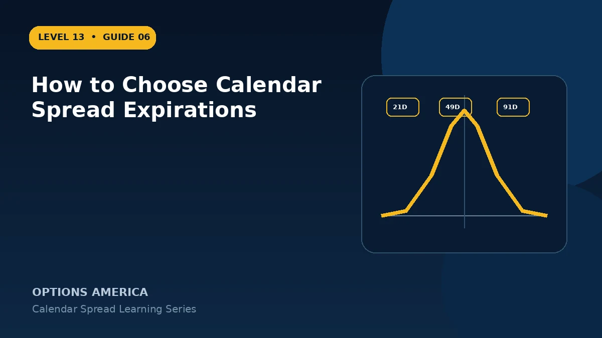

Select front and back expirations by comparing decay, vega, event timing, liquidity and the spacing between maturities.
Choose the front month
Sell an expiration that covers the period during which price is expected to approach the target. Near-term options decay faster but carry greater gamma and assignment sensitivity.
Choose the back month
Buy enough additional duration so the long option retains meaningful time value at front expiration. More distance usually increases debit and vega exposure.
Measure the gap
A small expiration gap may be inexpensive but leave little residual value. A large gap can create a strong term-structure trade while tying up capital and exposing the position to more volatility regimes.
Place known events intentionally
Decide whether earnings or macro events belong in neither expiration, both, or only the back month. Event placement can dominate ordinary theta assumptions.
A practical example
Compare selling 21 DTE and buying 49 DTE with selling 35 DTE and buying 91 DTE. The second structure has more duration, debit and potential vega exposure.
This simplified example uses selected price, time and volatility assumptions; live results will differ. Live option prices also reflect the underlying price, time decay, rates, dividends, liquidity and transaction costs. Greeks are theoretical estimates, not guarantees.
Frequently asked questions
How far apart should expirations be?
There is no universal gap; compare decay, debit and thesis timing.
Can the short expire after earnings while the long includes it too?
Yes, but model how event premium is distributed.
Is more back-month time always better?
No. It costs more and changes risk.
Continue the Calendar Spreads cluster
Explore related guides: Call Calendar vs Put Calendar Spread · Calendar Spread Greeks: Delta, Gamma, Theta and Vega · Calendar Spread: 12 Mistakes to Avoid. For a structured sequence, use the free Level 13 – Calendar Spreads course.
Options involve risk and are not suitable for every investor. This material is educational and is not investment, tax or legal advice. Greeks are theoretical estimates, and contract terms and broker requirements can vary.